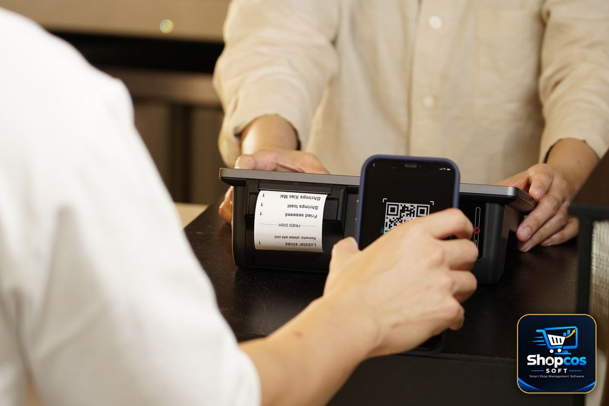
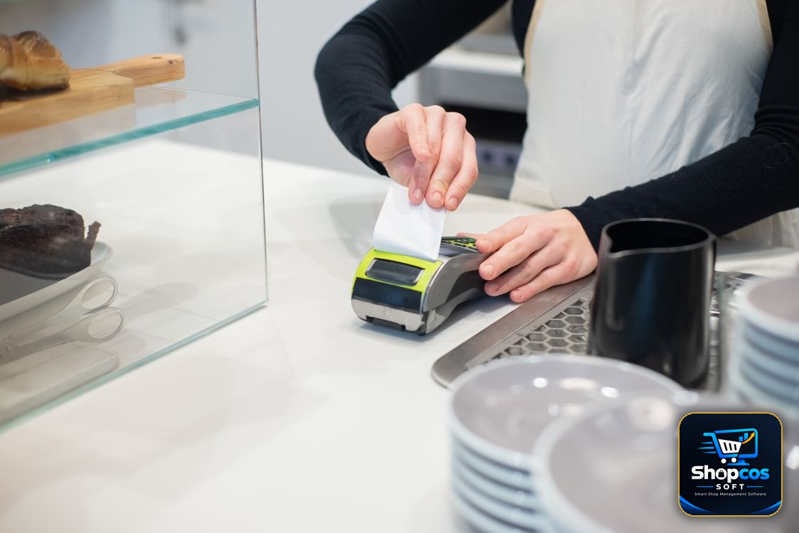

You pay at a big store, take your receipt, and notice something new at the bottom: a square QR code, an "FBR invoice number", and a small FBR POS logo. Most shoppers throw the slip away without a second look. That is a pity, because that little square is the one part of the receipt that can actually be checked. In under a minute, on your own phone, you can confirm whether the sale you just made was reported to Pakistan's Federal Board of Revenue (FBR) — or whether the receipt in your hand is just an ordinary printout dressed up to look official.
This guide explains the whole thing in plain words: what an FBR POS invoice is, what the QR code does and does not prove, how to verify it step by step with FBR's Tax Asaan app, what a "not found" result really means, and what shopkeepers — especially small ones — should and should not do with FBR logos and QR codes. No tax jargon, no accountant required.
The one-sentence version: an FBR POS invoice is a sale that the shop's billing system has reported to FBR in real time. The QR code is your shortcut to checking that report. If the shop is supposed to be FBR-integrated and its receipt has no FBR invoice number and no QR code, that absence is itself the answer.
First, What Is an FBR POS Invoice?
POS stands for point of sale — the till, the counter system, the software that prints your bill. Under FBR's POS integration system, certain retailers connect that system directly to FBR. Every time they make a sale, the invoice details go to FBR electronically, and FBR returns a unique invoice number. That number, together with a QR code, is printed on your receipt. In other words, the receipt is not just the shop's own record any more; it is a copy of a transaction FBR has also seen.
That is the key difference from an ordinary receipt. An ordinary receipt proves only that the shop printed a piece of paper. An FBR POS invoice proves that the sale was transmitted to the tax authority at the time of sale. This is why FBR built a public verification tool for shoppers: the system only works as a check on the system if customers can actually use it.
One important boundary, because it confuses almost everyone: not every shop in Pakistan has to do this. POS integration was rolled out for Tier-1 retailers — large stores, chains, and outlets in specified categories — and the list and thresholds have changed over time. Your neighbourhood kiryana store, your mohalla pharmacy, and a small single-counter shop are generally not Tier-1 retailers, and their receipts will not carry an FBR QR code. That does not make them dishonest; it means this particular system does not apply to them. Our FBR e-invoicing guide for small shops explains who must comply, who is exempt, and how to tell which side of the line your shop falls on — check it before you demand an FBR receipt from a shop that was never required to issue one.
Reading the Receipt: What Each Part Means
Hold a genuine FBR POS receipt up to the light — metaphorically — and you will usually find these elements. Learn them once and you will read every future receipt in seconds:
- The shop's name, address, and NTN. The National Tax Number identifies the registered business. A receipt with no shop name and no NTN is not a good sign, FBR-integrated or not.
- The FBR invoice number. This is the number FBR's system assigned to this sale. It is different from the shop's own bill number, and it is the number you type in if you verify manually instead of scanning.
- The QR code. A machine-readable shortcut that carries the invoice's verification details. Scanning it should take you to FBR's verification result for that invoice — not to the shop's website, not to a payment page, and not to a random link. (More on that warning below.)
- The FBR POS logo. A mark showing the receipt comes from an integrated system. A logo alone proves nothing — anyone with a printer can copy a logo — which is exactly why the QR code and invoice number exist to be checked.
- The items, quantities, and prices. Check these against what you actually bought before you leave the counter. Verification confirms the sale was reported; it does not check whether the shop charged you for three packets when you bought two.
- The sales tax line, where it applies. On a taxable sale, the receipt should show the sales tax charged as its own line, not buried inside the total. If you were charged tax, you are entitled to see how much.
| What you see on the receipt | What it tells you |
|---|---|
| FBR invoice number + QR code | The sale was sent to FBR's system and given an FBR number — verify it to be sure |
| Shop bill number only, no FBR number | An ordinary shop receipt; the sale was recorded by the shop, not reported through FBR POS |
| FBR logo but no number or QR | Suspicious — a genuine integrated receipt carries the number and code, not just the logo |
| Handwritten tax or a tax total with no breakdown | Not an FBR POS invoice; ask for an itemised, printed bill |
| QR code that opens a payment page or unknown website | Do not proceed — a verification QR should lead to FBR's verification result, never to a payment |
How to Verify, Step by Step (Tax Asaan App)
FBR's official verification tool is the Tax Asaan mobile app. Download it only from the official app stores, and check that the developer is FBR/PRAL before installing — fake tax apps are a real scam vector, and an app that asks for your bank card details is not FBR's. Once installed, the check itself is short:
- Open Tax Asaan and find the POS section. Look for the Point of Sale (POS) option on the main menu, then the "Verify Invoice" option inside it.
- Scan the QR code, or type the number. Point your phone's camera at the QR code printed on the receipt, or choose manual entry and type the FBR invoice number exactly as printed — digit by digit, with no spaces added or dropped. Most failed checks are typing errors, not fraud.
- Read the result, not just the tick. A verified result should show the invoice details that match your receipt: the shop, the date, and the amount. Compare them with the paper in your hand. A green tick for a different amount or a different shop is not a pass.
- Keep the receipt until you have checked. Verify at the counter or at home the same day, while the details are fresh and the shop can still reprint or correct a bill if something is wrong.

FBR also provides an SMS-based verification route through 9966 for invoice information, for shoppers who do not want to install the app. Follow the format the official app or FBR's own guidance gives you for that route — do not trust an SMS format forwarded on WhatsApp, and never send your CNIC, bank details, or any code to a number someone in a shop hands you. If a route asks for anything beyond the invoice details, stop and use the official app instead.
What the Result Actually Proves — and What It Does Not
This is where most explanations stop short, so let us be precise. A successful verification proves one thing well: that this invoice, with this number and amount, exists in FBR's POS records as a sale reported by that retailer. That is genuinely useful. It is the difference between trusting a printed slip and checking a second, independent record.
It does not prove everything else you might assume. It does not prove the shop paid its full tax bill for the month — reporting a sale and settling a tax liability are two different steps. It does not prove the prices were fair, the goods were genuine, or the weights were correct. And it does not, by itself, make you eligible for anything: FBR has run prize draws tied to verified invoices in the past, but whether any such scheme is running today, and what its rules are, is something to check inside the official app at the time — not something to assume from an old receipt or a shopkeeper's poster. Treat any claim of "scan and win guaranteed" with the same suspicion as any other too-good promise at a counter.
None of that makes verification pointless. It makes it specific. You are checking the one thing the QR code was designed to check: was this sale reported? For a shopper who just paid sales tax on a large purchase, that is exactly the right question.
When a Bill Does Not Verify: The Calm Checklist
A "not found" result feels alarming, but do not jump straight to an accusation. Work through this order, because the boring explanations are also the common ones:
- Re-type the number. Check every digit against the receipt, especially 0 vs O and 1 vs 7 on a faded thermal print. Scan instead of typing if the print is clear.
- Wait and retry. A sale reported moments ago can take a little while to appear in a verification lookup, and a weak mobile signal can return a false failure. Retry once after a short gap before concluding anything.
- Check you are verifying the right thing. Make sure you entered the FBR invoice number, not the shop's own bill number — the two are printed on the same slip and are easy to confuse.
- Ask the shop, politely, with the receipt in hand. "Your receipt has no FBR number — is your system integrated?" is a fair question at any large store. A genuine shop will explain, reprint, or show you its integration status. Evasiveness is information too.
- Report it through the app if it still fails. Tax Asaan includes a report option inside its POS section for invoices that do not verify. Use it, with the receipt details, rather than arguing at the counter or posting the shop's name on social media. A report creates a record; a public accusation creates a fight and proves nothing.
And keep perspective: a single failed check on one small purchase is a data point, not a verdict on a business. A pattern — every receipt failing, no FBR numbers at a store that plainly should be integrated, a QR code that opens a stranger's website — is the thing worth reporting properly.
A Warning About QR Codes in General
Here is an uncomfortable truth that belongs in any QR code guide in 2026: a QR code is just a barcode that opens a link, and anyone can print one. Criminals now stick fake QR codes over real ones, on parking meters, menus, and shop counters, to send scanners to phishing pages that steal payment credentials — a scam now common enough to have its own name, "quishing". So apply one hard rule, on receipts and everywhere else: a verification QR should lead to FBR's verification result. If scanning a receipt's code opens a payment page, asks for your card or bank login, or downloads an app you did not ask for, close it immediately and do not enter anything. FBR verification never asks you to pay, and never asks for your bank details. The same rule protects you at restaurants, petrol pumps, and anywhere else a QR code appears: if the destination does not match what the code claimed to be, the code is the scam, not the shortcut.

For Shopkeepers: What to Print, and What Never to Fake
If you run a shop that is FBR-integrated, your job is simple and non-negotiable: let the system do its work. Every bill your integrated system prints should carry the FBR invoice number, the QR code, and the FBR POS logo, on paper clear enough to scan. Test it yourself the way a customer would — scan your own receipt in Tax Asaan at least once, and after any printer change, paper change, or software update. A QR code that prints too faint, too small, or cut off at the edge is as useless as no QR code, and it is your customer who pays for it in wasted time and lost trust.
If your shop is not integrated — and most small shops are not — do not borrow the look. Never print an FBR logo, an invented "FBR number", or a decorative QR code on your bills to look bigger or more official than you are. Customers increasingly know how to check, a fake FBR mark is a fast way to lose a regular customer forever, and misrepresenting a tax document is a legal risk no small shop needs. An honest, itemised, clearly printed bill with your shop name, date, items, and total is worth far more than a copied logo: it is a receipt a customer can actually rely on, and it is the foundation your own records, your khata, and your accountant all stand on. If you later grow into Tier-1 territory, integrate properly — our POS cost guide walks through the real rupee cost of a counter setup, and our offline vs online billing comparison explains why a shop that loses internet during load shedding still needs to bill without interruption.
One practical habit for every shopkeeper, integrated or not: when a customer asks about the QR code, answer in one plain sentence instead of getting defensive. "This is our FBR invoice number, you can check it in the Tax Asaan app" — or, honestly, "Our shop is small, so we are not on the FBR POS system yet; this is our own printed bill." Customers respect a straight answer far more than a technical dodge, and the ones who ask are usually the ones who come back.
The Bottom Line
The QR code on an FBR POS receipt is a small piece of public accountability that Pakistan's shoppers barely use — and that is exactly why it matters. It takes less than a minute, it costs nothing, and it turns a piece of paper you would otherwise throw away into a check you can actually run. Learn what a real FBR receipt looks like, verify the big purchases, keep the receipt until you have checked, and report the ones that fail instead of just complaining about them. A system that nobody checks will eventually be gamed; a system that ordinary shoppers check, casually and often, stays honest almost by itself. Start with your next receipt.
Photo credits: Close-up of a printed receipt photo by Towfiqu barbhuiya · Person scanning a QR code at a retail counter photo by iMin Technology · Employee pulling a printed receipt from a payment terminal photo by Kampus Production — all via Pexels.